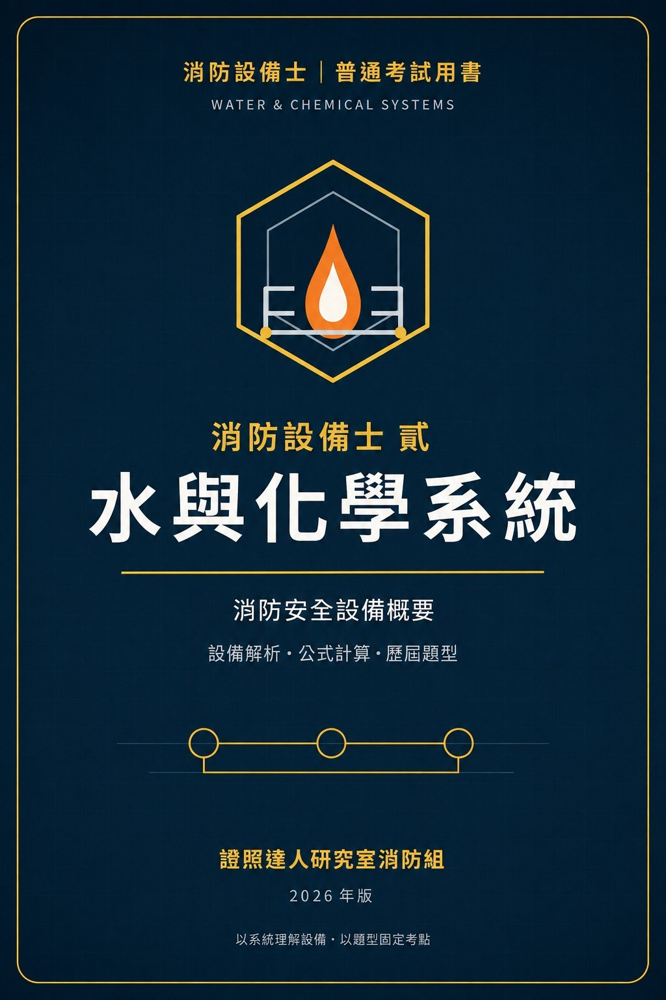

Google Play Books
消防設備士 貳：水與化學系統精練班
水與化學系統消防安全設備概要｜零基礎導讀、設備解析、公式計算與歷屆題型摘要自測

付費購買提供試閱版消防安全 / 考試準備
消防設備士 貳：水與化學系統精練班
水與化學系統消防安全設備概要｜零基礎導讀、設備解析、公式計算與歷屆題型摘要自測
本書以零基礎讀者為對象，整理消防設備士普通考試「水與化學系統消防安全設備概要」。全書先以八類設備總覽建立方向，再用來源、驅動、隔離、控制、輸送、釋放、證據的流程閱讀設備，並比較正常、動作與故障三種狀態。內容涵蓋室內消防栓、室外消防栓、自動撒水、水霧、泡沫、二氧化碳、惰性氣體、鹵化烴與乾粉設備，並提供法規與考題文件詞彙、設備解析工作表、技術值核對卡、公式計算示例、計算變化題、申論作答示範，以及依 114～115 年官方題本改寫的題型自測。本書適合準備消防設備士普通考試、需要建立水與化學系統整體觀念，或想把法規、設備、計算與題型連成一套讀書流程的讀者。技術值與題型均應依題目指定版本及官方最新資料重新核對。